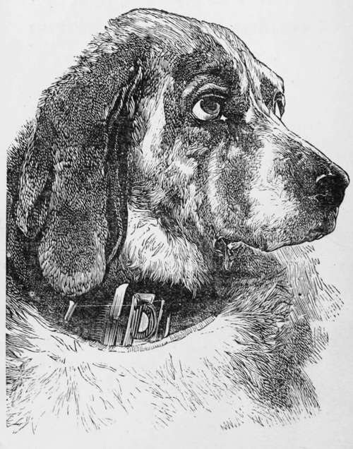
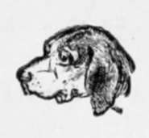

Management And Treatment Of Dogs
Description
This section is from the book "Breeding, Training, Management, Diseases Of Dogs", by Francis Butler. Also available from Amazon: Breeding, training, management, diseases.
Management And Treatment Of Dogs
It is more important to understand the management of a dog, than to be possessed of a thousand nominal remedies for the cure of his various ailments; inasmuch as the Antidote is at all times preferable to the Cure.
I shall first throw out a few hints on the guardianship of pets. Whilst many arc sacrificed, for lack of necessary attendance, there are thousands, who perish prematurely from over doses of kindness. Delicate breeds of Dogs certainly require great care and attention in rearing, but overstrained tenderness is often more dangerous than culpable neglect. The dear little creature, that is allowed to lay under the stove, that is stuffed with delicacies two or three times a day, that is never allowed to breathe the fresh air, except under a cloudless sky, is more subject to colds, fits, rheumatism, sore eyes and cars, worms, etc, than the worthless mongrel, who was raised on the street, neglected and despised. The former are affected by every change of the atmosphere, and subjected to a variety of diseases, unknown to him, who has been hardened from his birth. I ask you then, neither to stuff nor starve ; neither to chill nor burn. A house pet should always have a sleeping-place allotted to him, warm and comfortable, not near the fire, nor in the damp. Anything round is better for an animal to lay in; such as a tastefully ornamented cheese-box, or anything of a similar shape. In cold weather, it should not be larger than to contain him comfortably. It is better for the following reasons : he may keep himself perfectly warm, and his bed may be made exactly to fit him ; it also takes up less available space than any other shape. He should never be fed to the full, neither excited to eat, when he appears disinclined. Lack of appetite, so com mon to pampered favorites, is generally the result of an over loaded stomach and disordered digestion. This is easily cured by medicine, but more safely and simply without it. Fast him for twenty-four hours; after which, keep him on half his ordinary allowance: if it agree with him, and he keep in fair condition, continue the regimen. Nursing in the lap is injurious ; not in itself, but the animal is thereby subjected to constant chills, in emerging from a snoozy warmth to a cold carpet or chilly bed. A dog accustomed to the lap is always shivering alter it. and renders himself quite troublesome by his importunate addresses. A moderate share of nursing is well enough, but should be indulged in only as an occasional treat. Great care should be taken in the washing of delicate dogs. When this operation is performed, they should be rubbed perfectly dry ; after which they should be covered, and remain so, till the shivering has completely subsided. The water should be only blood-warm ; it is far better than hot. and not so likely to give the animal cold. Injudicious washing and bad drying are productive of running sore eyes, more especially visible in white Poodles, where the hair is long and wooly, retaining the moisture. Once a fortnight is often enough to wash any dog but a white one. Washing has very little effect in the destruction of Vermin. Fleas can live gome time under water, which I have often thought only makes them bite the harder and stick the closer, when reanimated from their temporary torpidity. If "Butler's Mange Liniment and Flea Exterminator" cannot be obtained, the animal may be well sodden with soft soap and washed about ten minutes after. This cannot be done with safety, except in warm weather, In cold weather, the comb may be used, immediately after the application of the soap, as the fleas will then be too stupid to effect their escape. " Butler's Liniment" destroys all vermin instantaneously, without risk of injuring the animal, and the quadruped may be rinsed one minute after ; no flea will remain alive ; the skin will be thoroughly cleansed and the coat beautified. Dogs should never be allowed to suffer the torment imposed on them by these detestable vermin. If the owners could only realize the importance of ridding them of these ever noisome pests, there would be far less of snappishness, mange, fits etc. I have seen animals literally worried to death by fleas, perfectly exhausted, from incessant irritation, at last worn to a skeleton and gradually extinguished by a creeping consumption. Besides, who, (for his own personal comfort), would not rid his immediate vicinity of a worthless mob of blood-suckers awaiting the first favorable opportunity of regaling themselves on human blood. If your dog lie on straw, burn it once a week, as fleas harbor and propagate in the tubes of the straw. If the bed be carpet, or anything similar, let it be often cleansed or changed. Vermin revel in filth, and their extirpation depends mainly on cleanliness.
By attending to the general health of a dog, much disease may be avoided ; indeed, this is far more essential than prescriptions for a cure. It is very easy to carry off a slight indisposition by gentle purgatives and a reformed diet; whilst confirmed disease is often difficult to combat, as few of the canine race can have the advantages which are ofttimes essential to their restoration. The eyes, the nose, the gums, the hair, the breath and particularly the character of the stools should be carefully noted. The eyes may be red or pale, sunken or protrud ed ; the nose may be hot or dry or matted with dirt; the gums may be pale, etc. It will require but little experience to discover a disorganiza tion, which may be easily detected by him who has noticed the healthful appearance of the different parts and their variation under indisposition. When the bowels arc swollen, it is generally an indication of worms, especially in puppies, who. if they arc not attended to. may drop off. before they reach their fourth month. If you are in the habit of keeping your dog on the chain, let him at least run a few minutes every day. If he be kept in doors, he should also be allowed a little daily exercise outside. Change of air and diet will sometimes renovate, when all remedies fail; a change from city to country, from greasy meat to fresh milk, from a confined yard to the green fields, where he will generally recruit himself without the aid of medicine. Nature, (to whom Physicians are so deeply indebted for so many wonderful restorations), often effects a cure unaided, which might have defied the efforts of Apothecary's Hall. In summer, particularly, be careful to provide a supply of fresh water and a cool shelter from the sun. Never take your dog-out, during the intense heat of the day ; this is very apt to produce fits, often resulting in sudden death. Early in the morning is preferable for summer exercise. The kennel should be located in a shady spot during- the summer ; in winter it should be sheltered from the wind and so placed as to enable the dog to enjoy the sun shine, at will. Above all things, never chain a dog, where he cannot screen himself from the sun's rays. He must have the option of sunshine or shade ; he should not be allowed to drink water, that has been standing in the sun or is otherwise damaged. If you should chance to forget to feed him for forty-eight hours, he would not run as much risk of injury, as during three hours of thirst, in hot weather. The best and cheapest dog-house may be made from a common packing-case ; it will require nothing but a round hole, about six inches from the bottom, made just large enough to admit of the passage of the tenant; a frame with sufficient pitch should be made over the top, to be shingled or boarded for a roof, which should project all round, as much as convenient, to shelter the animal from the sun and rain. If the back or front part only, under the roof be enclosed, it will answer as a convenient depot for chain, collar, whip, comb, brush, medicine, etc. There should be a piece of joice under each end of the house, to keep it otf the ground, i i order to avoid dampness. In summer, an excavation, two or three feet in depth, should he made under it, and open at both ends, that the animal may have a cool retreat, during the heat. Those, who do not object to a trifling expense, may have the house posted on a large paving-stone, with an excavation under it, as before recommended. All burrowing animals seek the earth in hot weather ; everything on the surface is heated ; their instinct dictates to them the most reasonable method of sheltering themselves from the heat, at. the same time, absorbing the cool exhalations from the ground. In southern climates, especially, this method is all important. In this manner, I have kept dogs from the polar regions, in comparative comfort, whilst many native-born and neglected have been scalded into fits, paralysis, rabies or hydrophobia. In the hot season, with young dogs, raw meats should be avoided, except it be quite fresh, and then it should not be over fed, especially to animals, who arc debarred abundant exercise and excluded from their own natural medicine : grass. Nevertheless I have not perceived any evil effects from the mod crate feeding of fresh sheep's heads, tripe or even entrails to animals of sufficient age and strength. A dog will thrive better on raw meat, than on any other food, and will grow larger : but he should be fed with discretion, and his health attended to, should his diet visi-blv disagree with him. Ho will grow fatter and be more healthy on moderate meals, than to be overgorged. The better plan is, to ascertain his average consumption and then allow him a little less. Keep his digestion in good order, and disease will rarely trouble him. His coat and ribs will generally indicate whether he be sufficiently cared for, whether he be sick or sound in his digestive organs. Feed him always in the same place, and at the same hour. Once a day is sufficient, if he be over six months old. By being fed only once a day, he is less choice, and will consume what he might refuse, if his appetite were dulled by a previous meal. Should yon require him to be watchful at night, feed him in the morning ; if you would have him quiet at night, feed him late, and don't leave him bones to gnaw. Dogs are pretty quiet, during the digestive process, when left to themselves, and should not have much exereise, alter a heavy meal. They should only he lightly fed, before training-lessons, or on sporting-days ; on the latter occasions, a little refreshment may be administered as occasion may require. Those kept in doors should be allowed to run a little after meals, when they generally require an evacuation. If a dog be regularly exercised, he will seldom even dirt around his kennel, and a healthy house-pet is rarely troublesome, except after eating. If a dog be dirty in the house, he should decidedly be broken of it, although he should not lie corrected, unless he has had a fair opportunity of avoiding it. He should be invariably taken to the spot, be sufficiently twigged there, and unceremoniously scolded into the yard. It is important to catch him in the act. and administer summary chastisement. The punishment will be far more justly administered, if the animal be let out at regular intervals ; this being done, he will not attempt to infringe the law, except in cases of dire necessity. Young puppies however, must be, in a measure excused or more gently corrected, as they are incapable of self-restraint. Nevertheless they may be very early initiated into habits of cleanliness. A Dog is often spoiled, by being caressed by hundreds, and kicked by scores ; either pampered by all, or fed by none : either constantly bound with a cramped range of a few feet, or left to ramble undirected, through the streets. He should have but one master ; should not be rendered sullen and surly, for lack of associating with his superiors, neither should he be allowed an enlarged acquaintance, especially in his own neighborhood ; as it will tend to render him listless as a guardian, and perchance too familiar with some, whose presence, it might be the peculiar interest of his master to avoid. Although there is as great a variety of talent and disposition in dogs, as in mankind, yet we can almost mould them, as we please. If they be too savage, they may be softened down by accustoming them to a variety of faces and friends ; and correcting them in their fiery ebulitions. If too meek, their dispositions may be roused and their dormant passions excited ; solitude, encouragement and occasional irritation may be resorted to ; in fine, a tame listless temperament should be cautiously handled, yet continually fed with gentle irritants, and the animal will not long require smarting up. I this have reduced the savage bull-dog to be as tractable as a hand organ, and have made the gentle Spaniel a thoroughly fierce watchdog. We must use firmness, without severity, except in cases of conscious misdemeanor ; pass no dog-laws which we are not at all times prepared to enforce ; never punish for a fault, unless we are perfectly satisfied of guilt; allow no one else to correct, unless urgent necessity demand it, and never allow the fire of our imagination to inflict more than deserved punishment.

Continue to:
- prev: Fox Hound
- Table of Contents
- next: Harrier